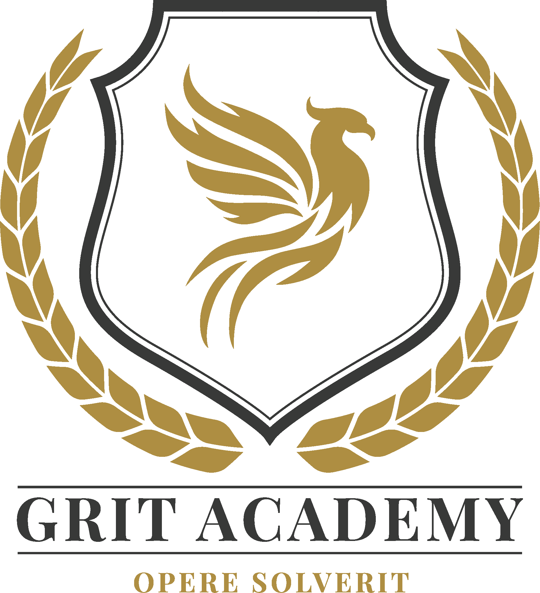

Grit Academy - Webbutveckling med inriktning E-handel
2-årig YH-utbildning 400 YH-poäng inom webbutveckling, projektledning och entreprenörskap med 20 veckors lärande i arbete.
Inkluderade kurser:
- ✨ Agil projektledning
- ✨ Entreprenörskap & konsultrollen
- ✨ Databashantering
- ✨ Betallösningar och tredjepartssystem
- ✨ Design & UX
- ✨ Digitala affärer & digital marknadsföring
- ✨ Dynamiska hemsidor
- ✨ E-handelsplattformar
- ✨ Frontend Javascript
- ✨ HTML och CSS